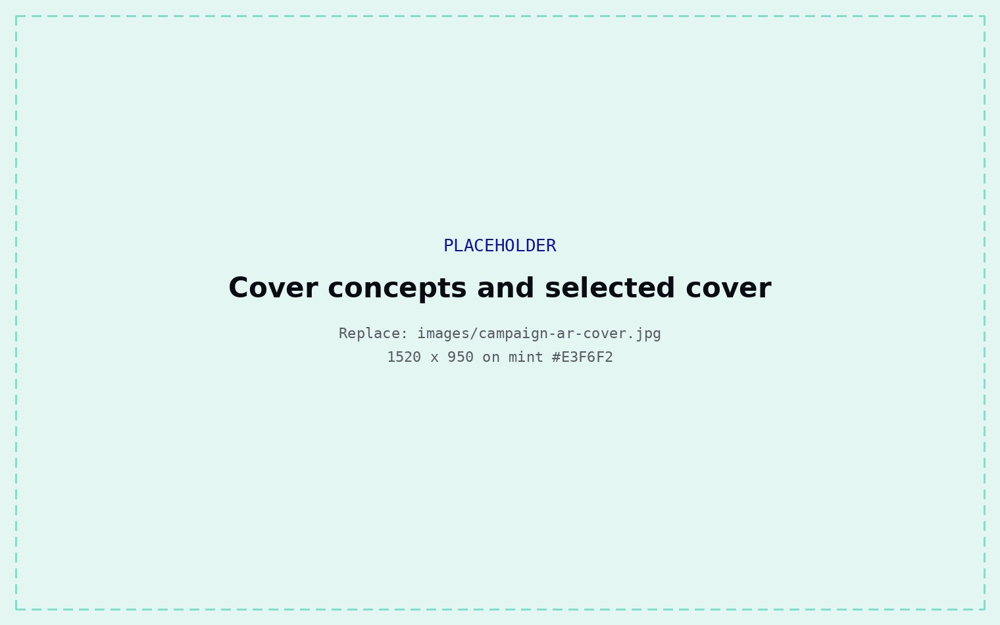
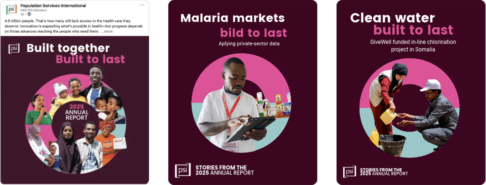
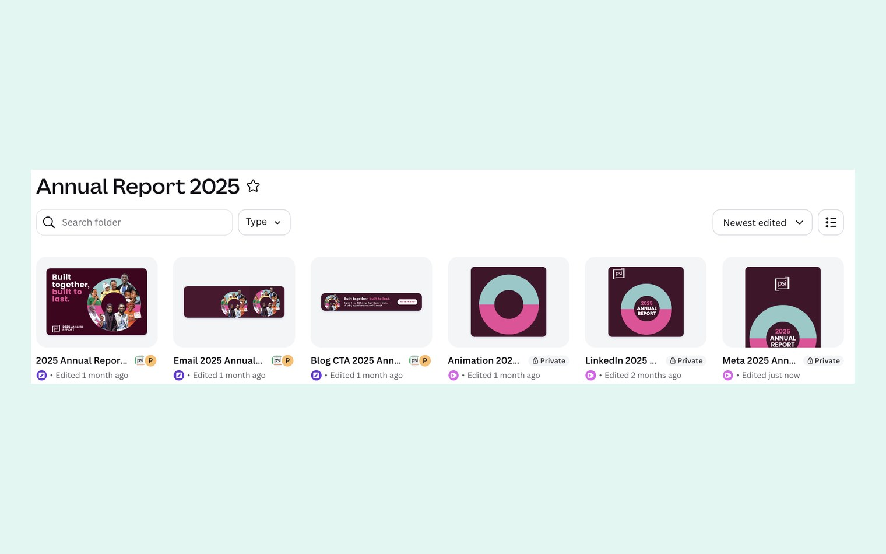
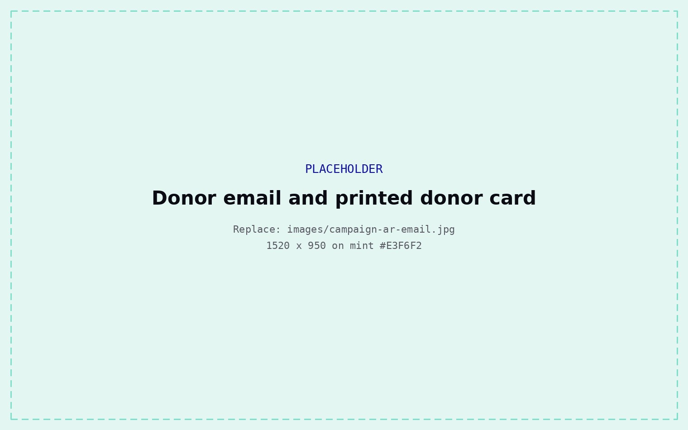

The challenge
2025 was a hard year for international development. The annual report needed to do more than list results. It had to show that the work that matters kept going despite the setbacks, and that it was built to hold.
The idea
Resilience as the through line. I went back to PSI's 2024–2030 strategy and developed three title options grounded in it. The CEO selected Built Together, Built to Last. "Together" carries PSI's integrated approach across People & Communities, Markets and Health Systems; "Built to Last" carries the endurance.
I presented three cover concepts. The selected direction uses a deep shade of PSI pink to hold the weight of the year, with a circle of photographs of the people in the report — the composition does the work of saying resilience without writing it down.

A system, not a cover
The circle and the title became a structure that flexed for every story. Visually, the circle holds only the photographs from that story, animated. Verbally, the title completes itself per theme.
A fixed half and an open half. Every team could say something true about their own work and every post still landed as one campaign.

The rollout
Rather than ask people to open a PDF, we led with the stories: report stories republished as blogs driving traffic back to the report, a social series with story animations, a donor email leading with the top three stories, a printed donor card, and the report carried internally through the leadership brief.


What came back
Longtime major donor